真！手把手教你 online judge 架設
資料來源
https://theriseofdavid.github.io/2021/03/29/linux/linux-build-online-judge/
開始架設
介紹
先介紹一下 online judge 是啥
就是線上評測程式碼
但其實就是「把程式碼丟到某台電腦執行」
現在，就是要讓大家把程式碼丟到你電腦裡面
系統要求
windows 11
記憶體(RAM) 30 以上(建議)
下圖是啥設定都還沒做，已經消耗 17GB 的記憶體(RAM)
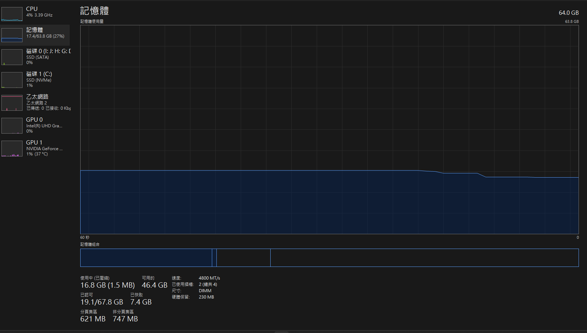
安裝python虛擬環境：Anaconda
我喜歡把不同事情的程式碼分成很多個「環境」
因為有些套件會有版本衝突，就像如果要開古董車，結果拿最新的輪胎，古董車不一定可以用
「最新版本的套件」就是「最新的輪胎」，可能可以給現代車用，但不能給古董車，也就是說不能匹配所有的車
不同環境就是不同工作室， A 工作室配備新輪胎，負責修理新車； B 工作室配備舊輪胎，負責修理古董車
Anaconda 就是一個可以創造「工作室」的 Python 平台，它讓我們可以蓋出很多工作室修理不同的車
1.下載 Anaconda
點擊網址，選擇下載
https://www.anaconda.com/download/success
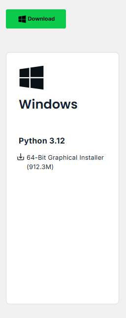
所有都按下繼續(你也可以仔細看，像是更換安裝位置之類的，但是我覺得別換比較好)
直到出現以下視窗
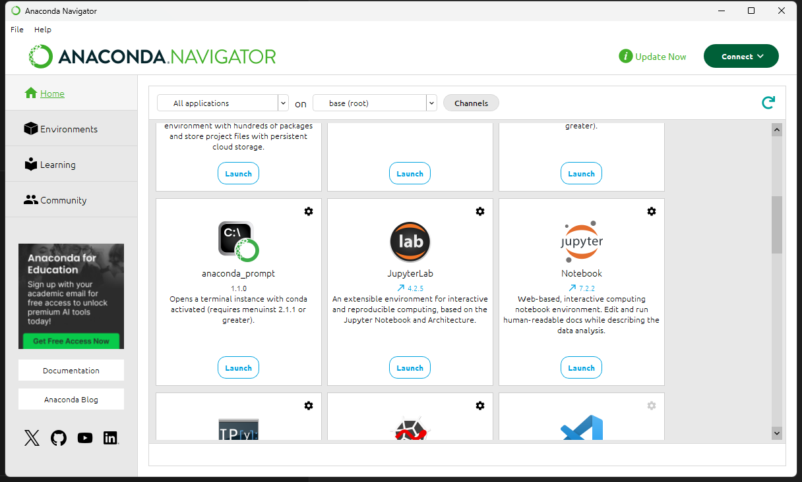
選擇 anaconda_promopt 點開 launch ，如下圖
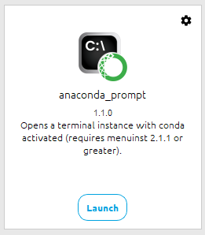
會跳出一個視窗，如下圖：
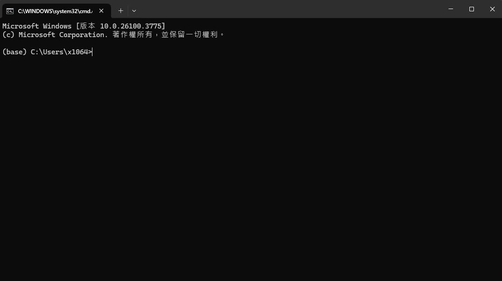
這邊就是 Anaconda 平台，其實也就是一個終端機(不知道終端機是啥沒關係)
2.創建環境
簡單介紹一下他的環境，可以看到代碼最前面寫了「(base) C:\Users\x1064>」也就是說現在 Anaconda 在 base 環境，他開啟了 C:\Users\x1064 資料夾，接下來我們要創造一個環境
在視窗中輸入以下代碼，按下enter
conda create --name online_judge
他可能會問你是否同意(如圖)，直接輸入y按下enter就好
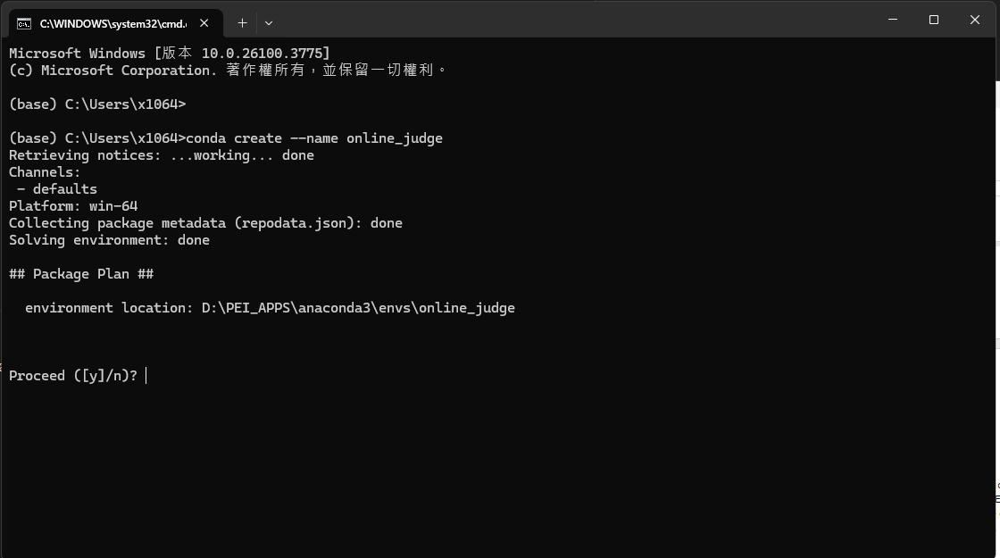
好了之後輸入以下代碼，按下enter
conda env list
會看到類似下圖的畫面(我已經使用了一些環境來做事情)，可以看到其中有一個叫做 online_judge
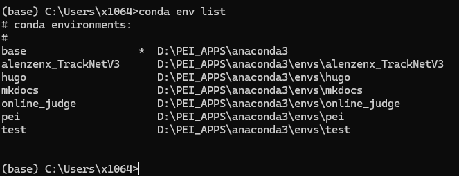
注意看base後面影一顆星星，就是現在 Anaconda 在 base 中，我們要讓他進入 online_judge 工作室，輸入以下代碼
conda activate online_judge
現在已經進入了工作室了
接下來請你選擇你 online judge 要存哪裡 (大概會用到20~30 GB甚至更多)，你自己選擇，任何地方都可以
選好地方之後用檔案總管打開你要存的位置，類似下圖
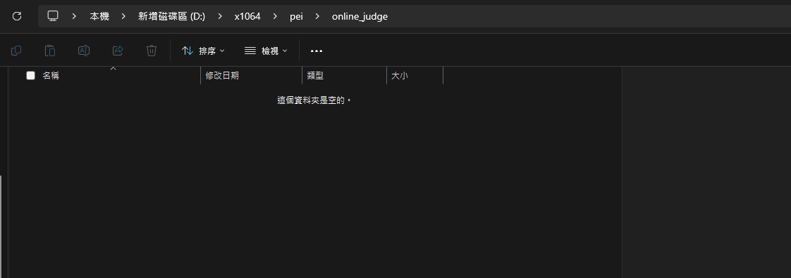
點擊上面路徑空白的地方，如下圖的右半邊
他會讓你複製，如圖，把他複製下來
輸入以下程式碼到 Anaconda
cd <你的檔案位置>
像我的檔案位置是在D:\x1064\pei\online_judge，就要輸入以下程式碼
會發現前面多了一個D:，這是因為 Anaconda 預設是在C槽，要些換到D槽要先輸入D:
D:
cd D:\x1064\pei\online_judge
最後就會到想要的路徑，像是下面這樣
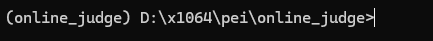
3.下載 online judge
在 Anaconda 輸入以下代碼，分別是「下載 online judge」和進到 「下載的檔案中的OnlineJudgeDeploy資料夾」
git clone -b 2.0 https://github.com/QingdaoU/OnlineJudgeDeploy.git
cd OnlineJudgeDeploy
畫面如下：
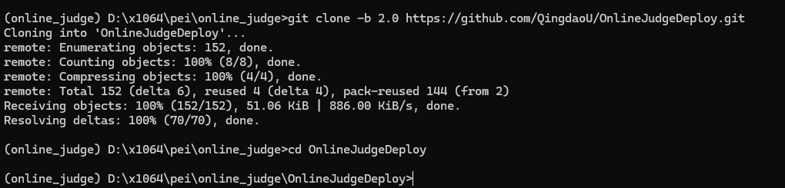
4.建立 docker 服務
前面完成了 Anaconda 的基本設置，接下來就要讓 docker 接管你的 online judge
先安裝以下網址
https://www.docker.com/get-started/
安裝之後一樣都按下確定，但是要注意他最後會問你要不要重新開機，不要直接按，把東西都關好之後再按下
開機之後
他會出現兩個畫面
1.
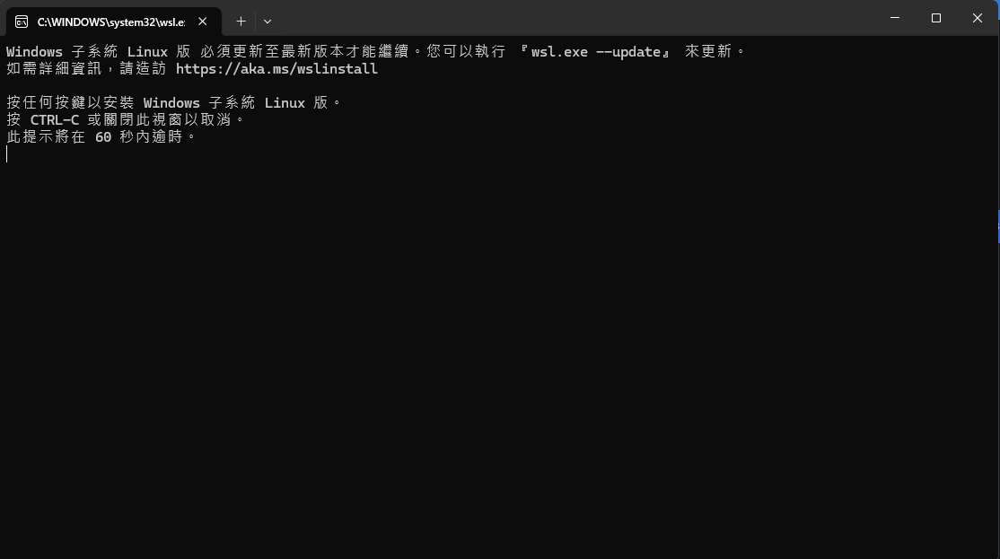
2.
我們先操作第一個畫面(可能沒有)
輸入並執行
wsl.exe --update
開始更新，如圖
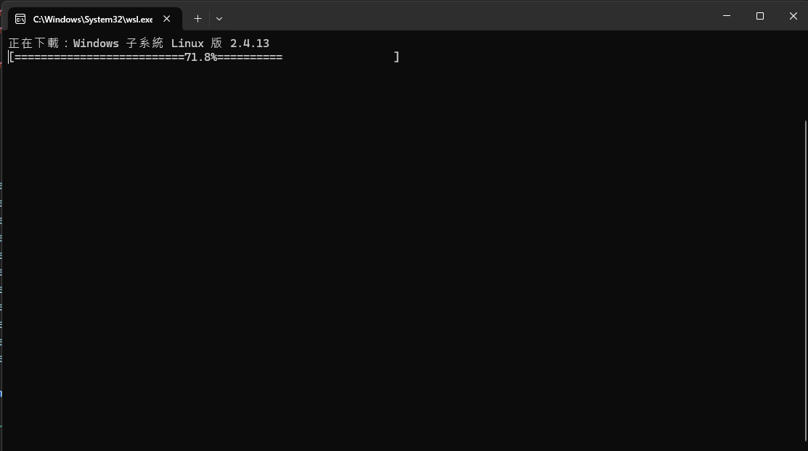
按下任何按鍵就好
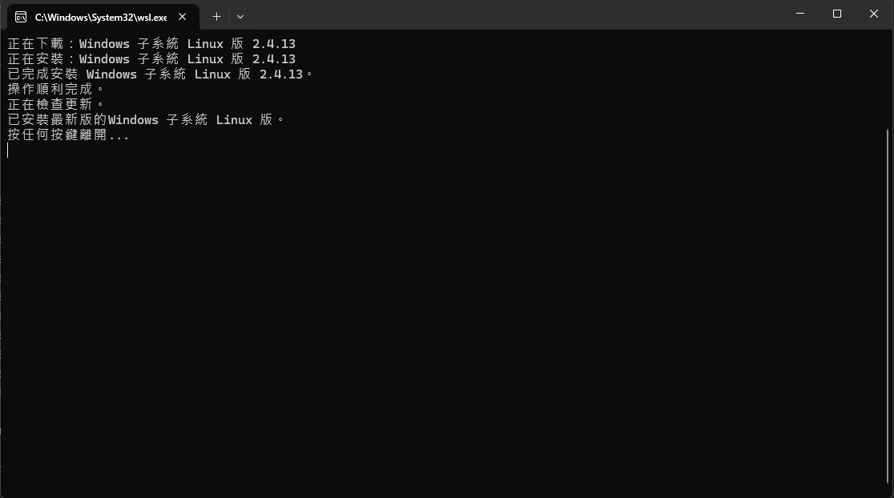
接著用第二個畫面
直接按下 Accept ，他會出現以下畫面，按下 Finish
接著登入，用任何一個 gmail 帳號就好，登入後會出現以下畫面，可以跳過(左上角 skip)
會出現類似下面畫面
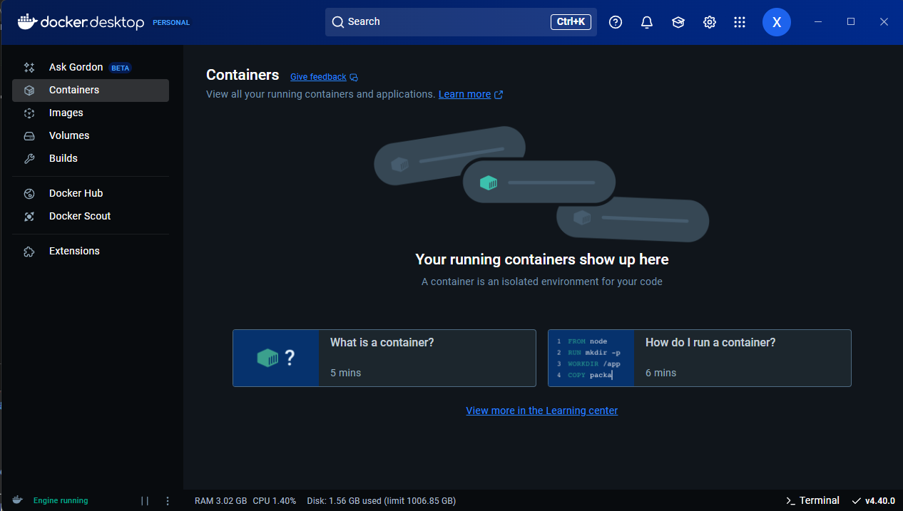
這樣就可以先不管 docker 了
接下來回到 Anaconda ，剛剛 Anaconda 應該已經重開機被關掉了
所以打開他，可以按下 windows 按鈕，查詢 anaconda Prompt ，如下圖
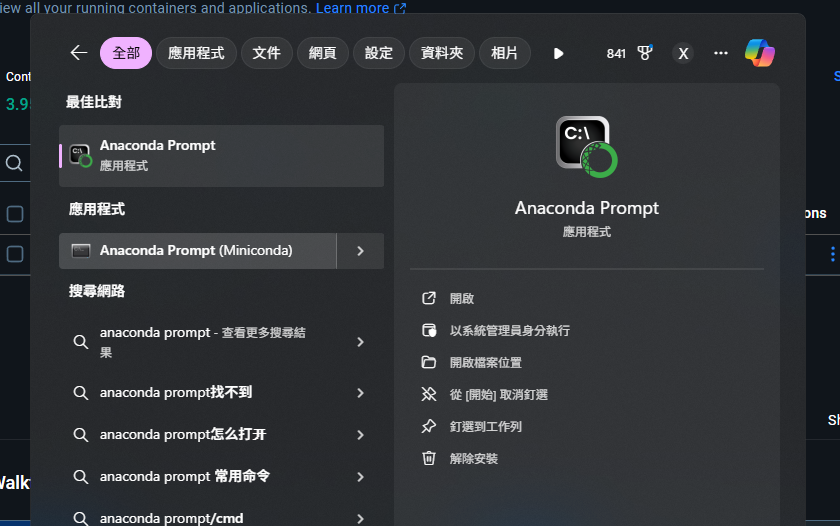
再輸入一次指令，開啟環境和資料夾：
conda activate online_judge
cd <你的檔案位置>
cd OnlineJudgeDeploy
我的話是：
conda activate online_judge
D:
cd D:\x1064\pei\online_judge
cd OnlineJudgeDeploy
如下圖

現在開啟環境「(online_judge) 」和「OnlineJudgeDeploy」資料夾了
接著我們繼續做事情，接下來要讓 docker 接管你的 online judge
執行以下程式碼
sudo docker-compose up -d
如果出現像下面的錯誤
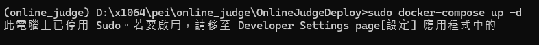
就把下面的設定打開
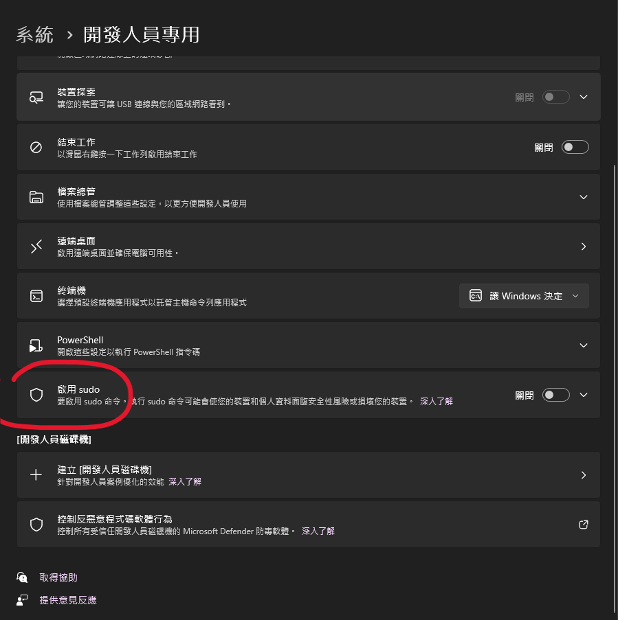
然後在執行一次
他會出現以下視窗
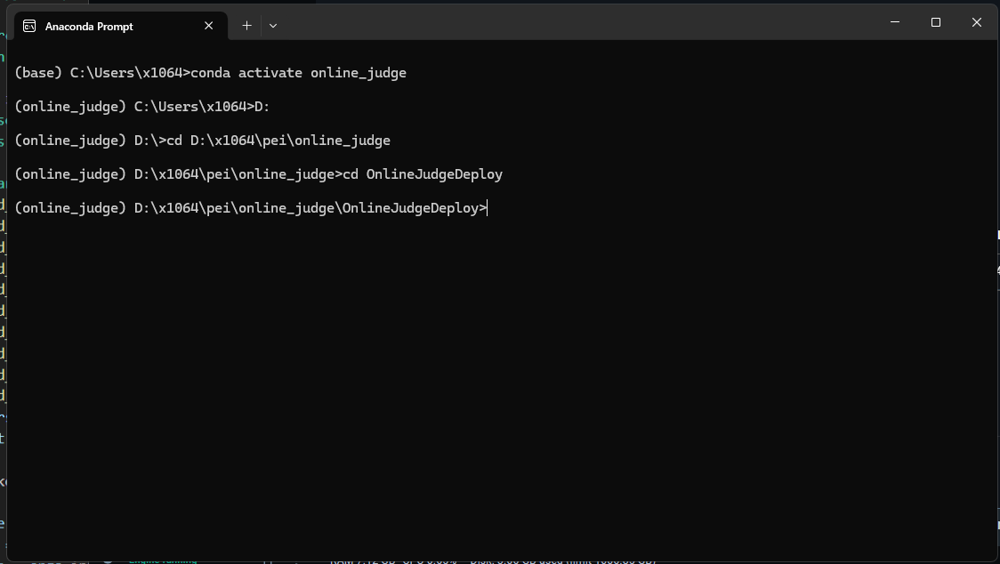
等他跑完，會發現 docker 出現了一個東西正在運作，如下圖
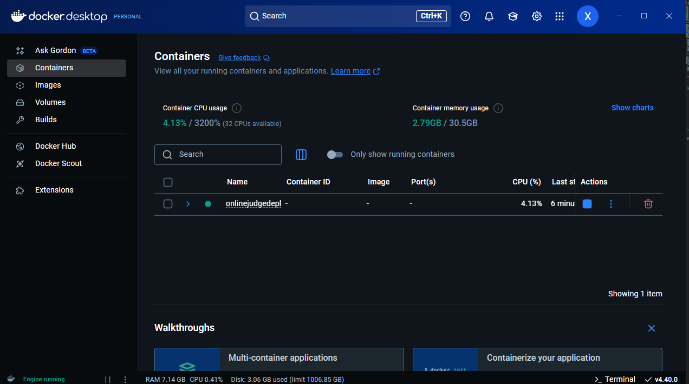
現在就......成功了在本地做好了！！！！！！！！！！！！！！！！！！！！！！！！！！！！！！！！
你可以開啟隨便一個瀏覽器，輸入以下網址或是點擊連結： http://localhost:80
localhost:80
你會看到一個預設畫面
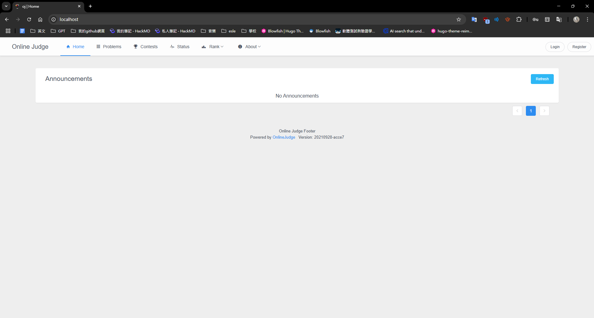
這樣已經完成了「在本地評測程式碼」
接下來就要讓別人可以連到你的主機
讓別人可以連到你的主機
1.下載ngrok
https://ngrok.com/downloads/windows?tab=download
點開後如下圖
選擇你電腦的 Bit下載
不知道自己電腦是多少bit就點進來
- 按下 Windows 鍵 + R，開啟「執行」對話方塊。
- 輸入 msinfo32，然後按下「確定」。
msinfo32 - 在「系統資訊」視窗中，找到「系統類型」項目，如下圖，我的是 64 Bit
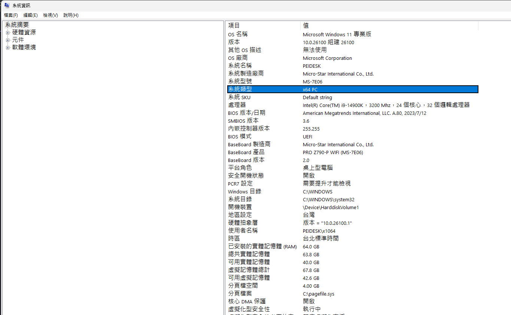
下載之後隨便找個地方解壓縮，點開解壓縮的資料夾，如下圖
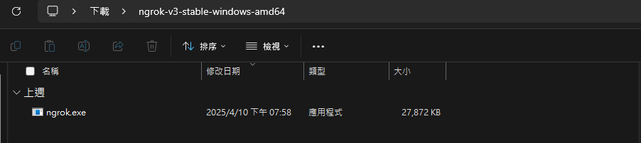
將ngrok.exe複製到你的 online judge 資料夾，如下圖：
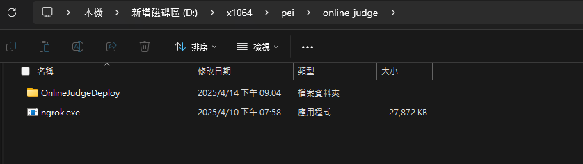
2.創建帳戶並取得授權
接下來要創建帳戶並取得授權，點擊以下網址，用gmail登入，接下來可以全部跳過
https://dashboard.ngrok.com/get-started/your-authtoken
會看到以下畫面：
點選左邊Your Authtoken按鈕，如下圖
會看到以下畫面，點選 copy ，這就是你的「授權token」
3.執行ngrok
點開 ngrok.exe ，會出現終端機，如下兩張圖
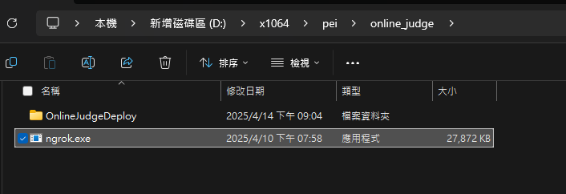
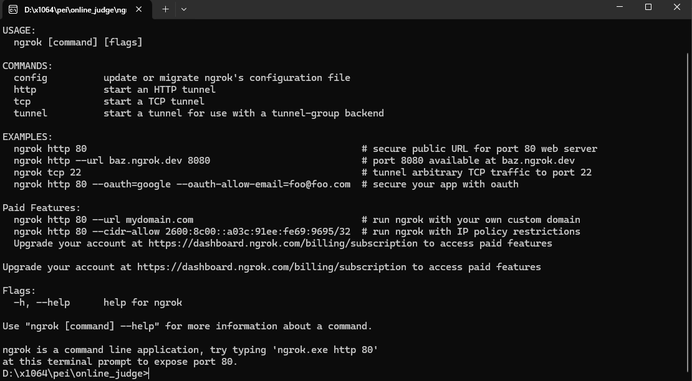
在ngrok開啟的終端機輸入，按下enter
ngrok authtoken <你剛剛複製的授權代碼>
像我的是
ngrok authtoken 2viyyc7F3qTV2xefz0TbxsCRIOD_3WTuuwTAC647Rpm9kVpkT
會出現像是下面的畫面
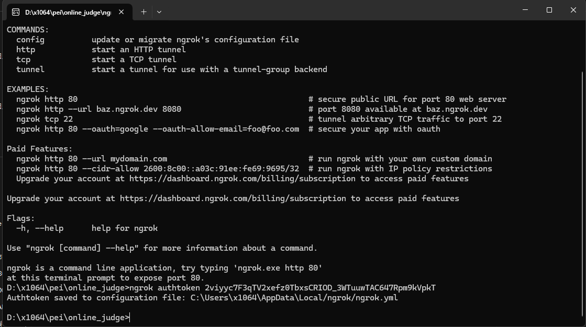
接著到 ngrok 網站，點選按鈕，如圖
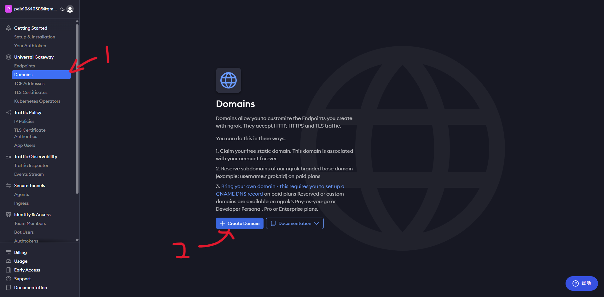
會出現以下畫面，按下複製，如圖
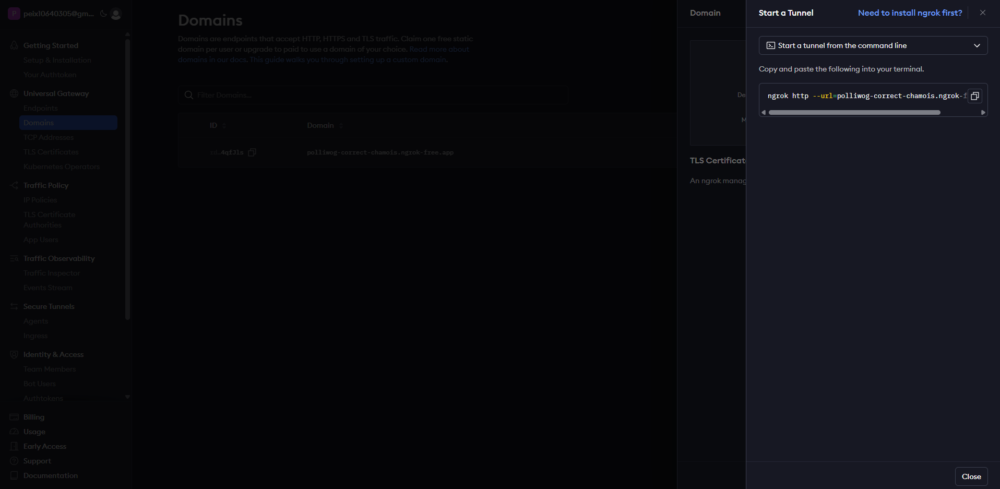
貼上到 ngrok
他就會出現下面的畫面
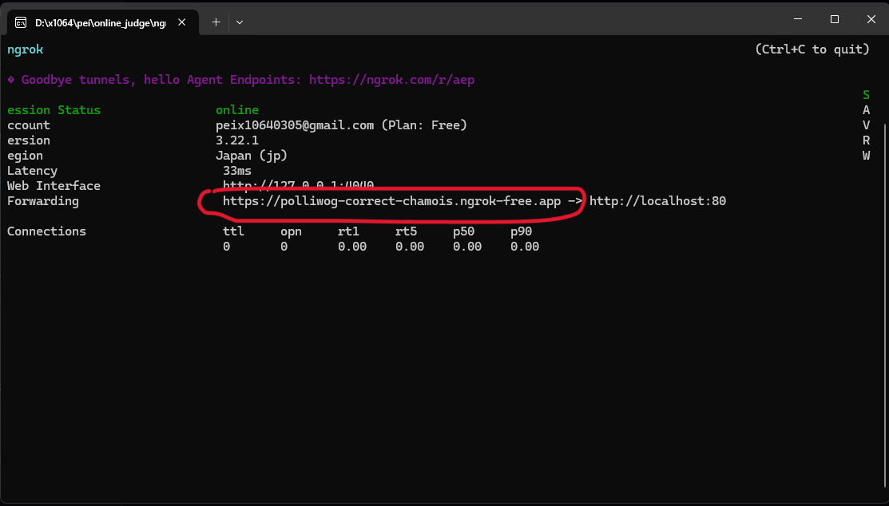
點選網址(要按ctrl)就可以連到網站，如圖
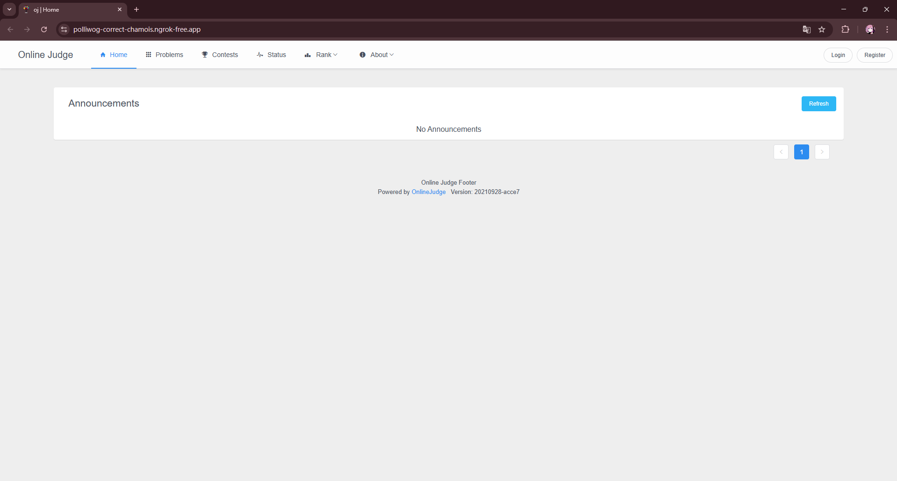
現在這個網址就是你的網站了！！要記得存下來
自動化開啟
以下是你每次開機之後要做的動作(你先看看就好不用動作)
- 開啟 docker 應用程式
- 開啟 Anaconda Prompt
- 輸入：
# 進入conda(不用改) conda activate online_judge # 開啟資料夾(改成你的) D: cd D:\x1064\pei\online_judge\OnlineJudgeDeploy # 讓docker代理(不用改) docker-compose up -d - 開啟 ngrok.exe，輸入：
#都改成你的 ngrok authtoken 2viyyc7F3qTV2xefz0TbxsCRIOD_3WTuuwTAC647Rpm9kVpkT ngrok http --url=polliwog-correct-chamois.ngrok-free.app 80
這樣很多很麻煩，反正每次都要開電腦都要開網站，那是不是設定成「開啟電腦自動執行」會不會超級方便
接下來就教你怎麼做
你先把所有終端機關掉，按下叉叉就好(Anaconda 和 ngrok)，再開啟docker把代理關掉，如下圖
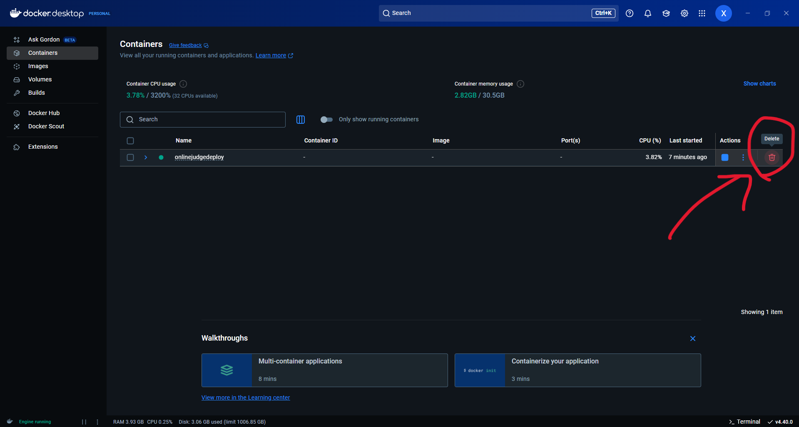
接著在 online judge 資料夾新增一個文字檔，如下圖
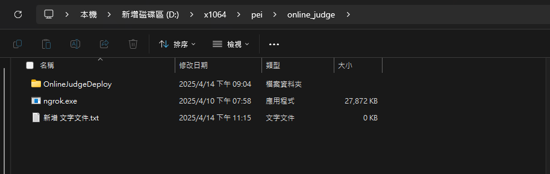
開啟文字檔，貼上：
"C:\Program Files\Docker\Docker\Docker Desktop.exe"
<你的 OnlineJudgeDeploy 資料夾的路徑>
docker-compose up -d
start <你的網頁網址>
ngrok authtoken <你的ngrok授權token>
<你在Domains複製下來的東西>
我的是：
"C:\Program Files\Docker\Docker\Docker Desktop.exe"
D:
cd D:\pei\OnlineJudge\OnlineJudgeDeploy
docker-compose up -d
start https://polliwog-correct-chamois.ngrok-free.app/
ngrok authtoken 2viyyc7F3qTV2xefz0TbxsCRIOD_3WTuuwTAC647Rpm9kVpkT
ngrok http --url=polliwog-correct-chamois.ngrok-free.app 80
修改好後 檔案 -> 另存新檔，如下圖
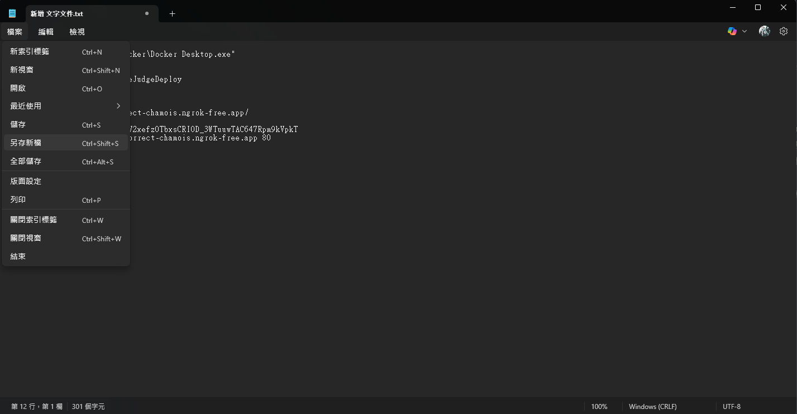
存檔名稱改為：
<你喜歡的名字>.bat
注意副檔名是 bat
檔爛類型改為「所有檔案(.)」，如下圖
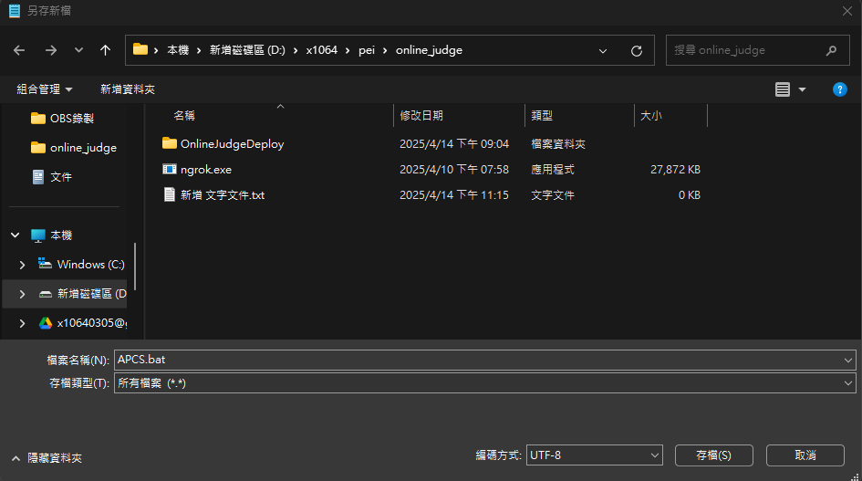
按下存檔，如下圖，會看到APCS.bat在資料夾中
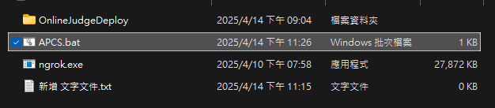
接著按下 Windows 鍵 + R 鍵，開啟「執行」對話框。
輸入：
shell:startup
然後按下「確定」。
會開啟一個「啟動」資料夾
在這資料夾中的捷徑會自動開啟(只能放捷徑)，如下圖，你可能會有一些已經預設的
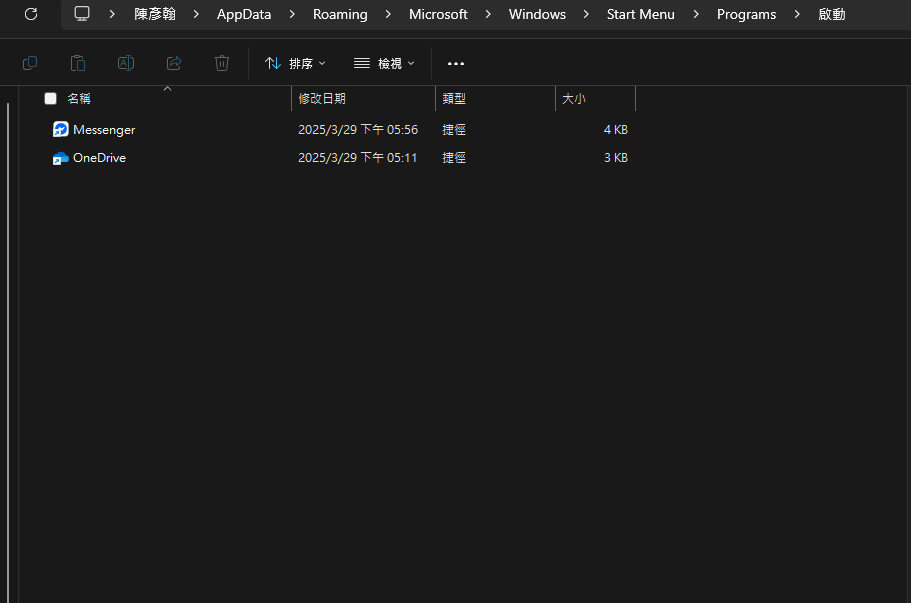
按右鍵->新增捷徑->瀏覽，找到你的APCS.bat，按下確定，如圖。
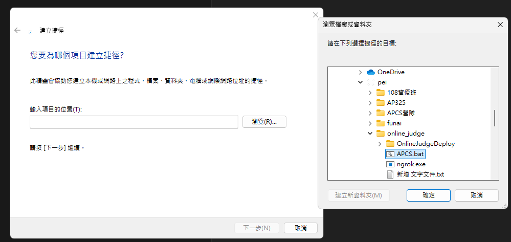
然後按下「下一步」、「完成」。
最後將電腦重新開機，出現像是下圖的網頁，等個10~20秒按下重新整理網頁，神奇的事情發生了
！！！！！！！！！！！！！！！！！！！！！！！！！！！！！！！！！！！！！！！！！！！！！！！！！！！！！！！！！！！！！！！！！！！！！！！！！！！！！！！！！！！！！！！！！！！！！！！！！！！！！！！！！！！！！！！！！！！！！！！！！！！！！！！！！！！！！！！！！！！！！！！！！！！！！！！！！！！！！！！！！！！！！！！！！！！！！！！！！！！！！！！！！！！！！！！！！！！！！！！！！！！！！！！！！！！！！！！！！！！！！！！！！！！！！！！！！！！！！！！！！！！！！！！！！！！！！！！！！！！！！！！！！！！！！！！！！！！！！！！！！！！！！！！！！！！！！！！！！！！！！！！！！！！！！！！！！！！！！！！！！！！！！！！！！！！！！！！！！！
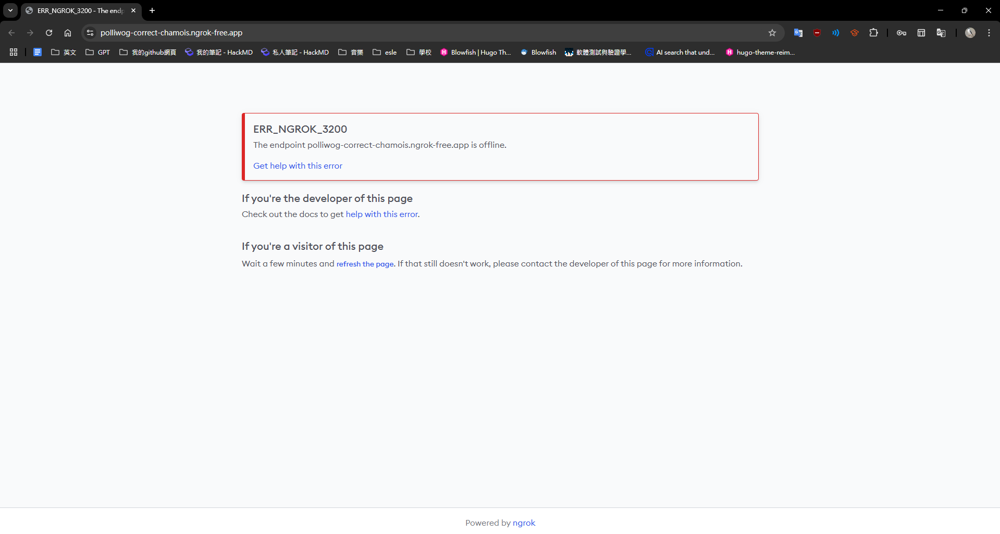
這樣就完成了所有的網站架設
要注意不要把 ngrok 的視窗關掉(如下)
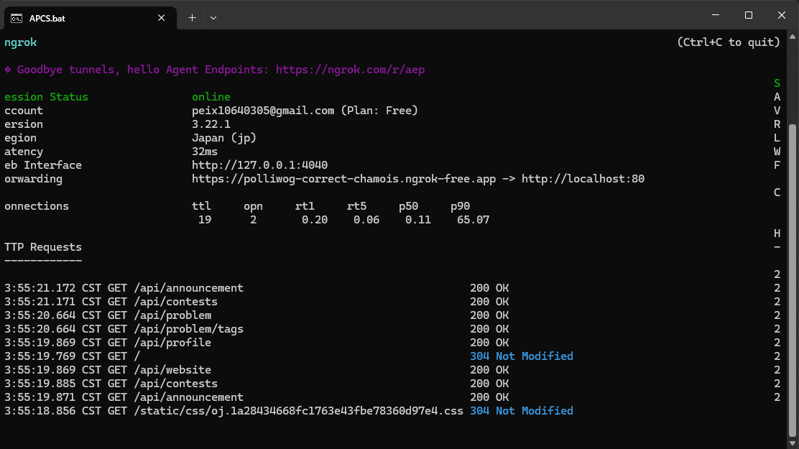
不小心關掉的話就找到 APCS.bat 點兩下就好
而 docker 視窗關掉沒關係，他會在背景執行
操作網頁
進入後台
我們先進入管理者的權限，查看後台配置
管理者預設帳號
root
管理者預設密碼
rootroot
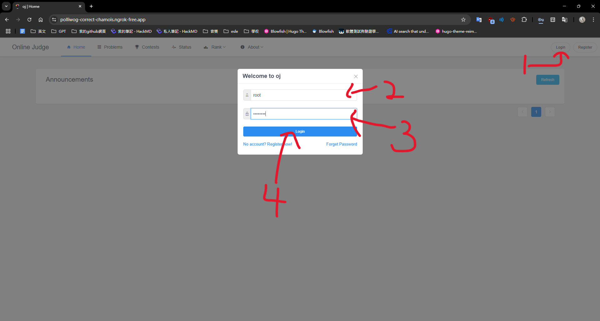
測資產生
import os
import json
import zipfile
script_folder = os.path.dirname(os.path.abspath(__file__))
cph_folder = os.path.join(script_folder, ".cph")
zip_file_name = os.path.join(script_folder, "0.zip")
if not os.path.exists(cph_folder):
exit(1)
with zipfile.ZipFile(zip_file_name, "w") as zipf:
for file_name in os.listdir(cph_folder):
if file_name.endswith(".prob"):
prob_file_path = os.path.join(cph_folder, file_name)
with open(prob_file_path, "r", encoding="utf-8") as prob_file:
try:
prob_data = json.load(prob_file)
except json.JSONDecodeError as e:
continue
tests = prob_data.get("tests", [])
for i, test in enumerate(tests, start=1):
input_data = test.get("input", "")
output_data = test.get("output", "")
input_file_name = f"{i}.in"
output_file_name = f"{i}.out"
input_file_path = os.path.join(script_folder, input_file_name)
with open(input_file_path, "w", encoding="utf-8") as in_file:
in_file.write(input_data)
zipf.write(input_file_path, arcname=input_file_name)
output_file_path = os.path.join(script_folder, output_file_name)
with open(output_file_path, "w", encoding="utf-8") as out_file:
out_file.write(output_data)
zipf.write(output_file_path, arcname=output_file_name)